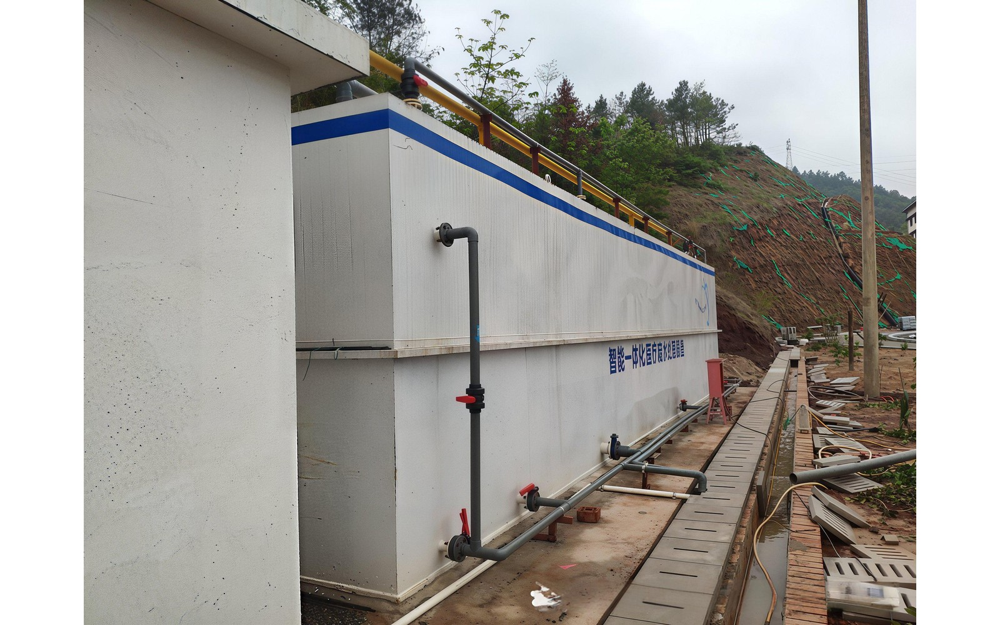

GUWEIENVIRONMENTAL
GUWEIENVIRONMENTAL待确认
Treatment Capacity
Solutions / Hospital Wastewater
Please specify hospital type, project stage, expected flow and discharge destination so we can discuss equipment and control requirements.
01 / Project Overview
Available photographs show equipment and tanks on site. Project name, institution type and service scope: 待确认.


Treatment Capacity
Treatment & Disinfection Configuration
Discharge Destination & Treatment Targets
Available photographs show treatment equipment, tanks and instruments. Models, quantities and final configuration: 待确认.
Hospital type, wastewater sources, project stage and operating records: 待确认.
02 / Processes & Systems
The project's process route, disinfection method and operating parameters: 待确认.
Healthcare wastewater treatment combines pretreatment, biological treatment and disinfection.
Enhanced primary treatment:A reference route for general hospitals discharging to municipal sewers is septic tank → equalization → coagulation and sedimentation → disinfection contact tank. Coagulation and sedimentation remove suspended solids and pathogen-bearing particles to support disinfection. Project suitability requires confirmation.
Secondary treatment:A reference route for infectious disease hospitals and general hospitals discharging to receiving waters is equalization → biological oxidation → sedimentation → contact disinfection. Options include biological contact oxidation, activated sludge, MBR and biological aerated filters, followed by disinfection after organic matter and ammonia removal. Selection must match applicable requirements.
Simplified biological treatment:The source material describes anaerobic purification followed by disinfection for small general hospitals in less-developed areas. This approach has limited treatment performance; project applicability and current requirements must be confirmed.
Disinfection is a critical stage in healthcare wastewater treatment. Common options include:
Chlorine dioxide:A strong oxidant used for disinfection. By-products, dosing, operating safeguards and suitability must be evaluated for the specific wastewater and applicable requirements.
Sodium hypochlorite:Readily available and convenient to transport. Dose and contact time must be selected for the wastewater and required disinfection performance.
Ozone:Effective disinfection with short contact times, but typically higher equipment and operating costs.
Ultraviolet disinfection:No chemical disinfectant residual; an option where residual chlorine is tightly restricted, subject to water quality and design requirements.
03 / Project Equipment
See the project overview for equipment and site photographs. The following describes configuration and information still to be supplied.
Guwei healthcare wastewater equipment is configured for the wastewater characteristics of medical facilities, addressing pollutant removal and pathogen inactivation. Compliance and acceptance depend on the confirmed project design, operation and testing.
Equipment list, models, supply quantities and corresponding photographs: 待确认. Available site photographs are in the project overview.
04 / Site Implementation
Separate installation, commissioning and operating records, and the mapping of photographs to this project: 待确认.
1. Hospital type and size, and the main wastewater-generating areas.
2. Approximate daily flow, new-build or retrofit status, and discharge destination.
3. The issue you most want to resolve.
You can start with the information you have, even without complete drawings or technical documents.
Share the project type, capacity and contact details so we can discuss your technical requirements.
Online enquiries are not currently available. Please contact us by phone. +86 18026396076